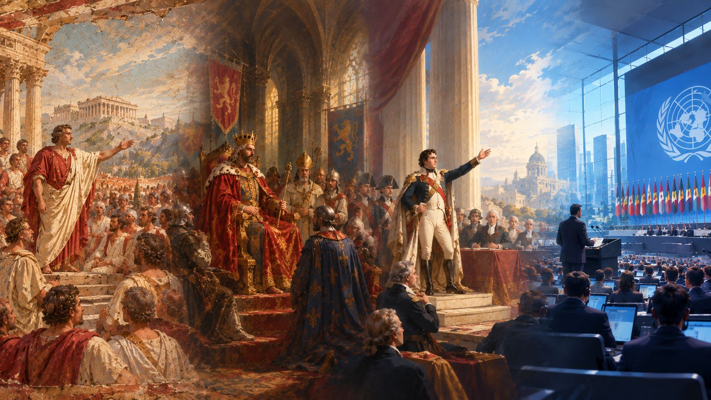

政治
第一章 · 什么是政治
什么是政治
这一章，你将住进一座大房子，围观一场关于洗澡和扫地的商量。
你会看见：约定如何变成规则，规则如何长出权力。
最后，我们用一句话回答：什么是政治。
大房子
同一座大房子
想象一群素不相识的人，被放进了同一座大房子。
厨房只有一个，客厅只有一间，热水器也是共用的。
从住进来的第一天起，他们就绕不开同一件事：一起生活。
商量
那场商量
谁先洗澡？谁来扫地？垃圾袋谁倒？
没有人能独自决定——因为任何一个人的决定，都会落到所有人头上。
于是大家坐下来商量。这场商量，就是政治的雏形。
规则
从约定到规则
当商量变成约定，约定变成规则，规则被多数人遵守——你就看见了权力的轮廓。Fact
权力不一定是王冠，也不一定是枪。它可以是「谁说了算」这件事本身。
为什么需要规则？因为一百个人住在一起，没有规则，就只剩一百种争吵。
分歧
分歧不是缺陷
好东西总是有限，想要的人总是更多。
有人想早睡，有人想开派对；有人想存钱，有人想修屋顶。
分歧不是政治的缺陷，而是它存在的原因。
定义
政治是什么
所以，什么是政治？
政治，就是人们决定「我们如何一起生活」的那门手艺。
它可能粗糙，可能优雅；但每个人都住在它的作品里。
你身边最近的一次「商量」，是什么？谁先开口，谁最后拍板？那就是一场最小的政治。
第二章 · 国家的诞生
国家的诞生
当大房子大到装不下商量，人们发明了国家。
这一章认识它的零件：主权、政府、法律与制度。
你即将创造的那个国家，也属于这个古老的传统。
国家
一个更大的房子
当大房子变成一座城、一片土地、几百万人，商量就装不下了。
人们需要一个更大的容器，把规则装起来——这个容器，就是国家。
所以国家，就是这片土地上所有人的共同房子。
主权
国家的签名
在国家之内，最终的决定权归谁？
政治学把这个「最终决定权」叫作主权。Fact
主权，是国家的签名：这片土地上，规则由这里的人说了算。
政府与合法性
为什么服从
为什么一群人，愿意服从另一群人？
有的服从来自习惯，有的来自恐惧，有的来自承认：「由它决定，是合理的。」
这种「被承认的合理」，政治学叫它合法性。Fact
法律
写下来的规则
商量出来的规则，被写下来，向所有人公开，违者承担后果——规则就成了法律。
法律的意义不在于惩罚，而在于「大家都提前知道」。
当你起草自己国家的宪法时，你就在做这件事。
制度
游戏规则
谁来做决定、怎么做、多久换一次——这套关于「如何决策」的安排，就是政治制度。
不同的国家给出不同的答案。没有哪一套是唯一的。
后面的旅程，你会看到它们的全貌。
第三章 · 政治的历史
政治的历史
从篝火旁的会议，到今天的议会——政治走过了两千五百年的长路。
这一章是快进的时间线：每一站，只看最关键的那一步。
很久以前
篝火旁的会议
很久以前，人们围着篝火，用谈话而不是拳头解决争端。
长者发言，众人倾听；猎场怎么分，水井归谁守。
这是最早的政治会场。
约公元前 500 年
城邦与广场
后来，城邦出现了。
雅典的公民聚集在广场上，学习一件新事：用投票代替争吵。
「民主」这个词第一次有了形状——虽然那时的「公民」，只包括少数人。Fact
公元前 509 年 — 公元 476 年
元老院与帝国
罗马人把「公共事务」（res publica）写进制度：执政官、元老院、公民大会互相牵制。
共和国后来膨胀成帝国，但「公共事务属于人民」这个念头流传了下来。
直到今天，许多国家仍然称自己为「共和国」。
公元 5 — 15 世纪
王冠、城堡与契约
中世纪的欧洲，土地换忠诚：领主与封臣层层宣誓。
教会与王冠争夺谁更有权。
1215 年，一群贵族逼国王签下《大宪章》——王权第一次被一张纸约束。Fact
17 — 18 世纪
风从印刷厂吹来
印刷术让思想跑得比马快。
启蒙思想家们追问：权力凭什么属于某个人？人为什么需要国家？
「权利」「契约」「人民」这些词，开始登上舞台。
18 世纪末
王冠落地
十八世纪末，大西洋两岸先后爆发革命。
美国独立与法国大革命，把「人民可以推翻不合理的统治」从书本变成现实。
宪政、共和、民族国家——现代政治的骨架，就此搭起。
19 世纪至今
长河入海
工业革命造出新的阶级，民族主义画出新的边界，两次世界大战重写地图。
冷战把世界分成两个阵营，联合国试图给争端一张谈判桌。
今天的选举、议会、政党、公共讨论——你听到的每一个词，都从这条长河里来。
第四章 · 历史转折
历史转折
有些时刻，旧秩序在一夜之间瓦解。
这一章讲五场转折：法国大革命、美国独立、一战与二战、苏联的成立、冷战——按同一张地图来读。
历史转折 · 一
法国大革命
1789 年，巴黎的街头点起了一场改变世界的火。
它不是一夜之间烧起来的——木柴堆了整整一个世纪。
背景
1780 年代的法国：王室财政濒临破产，沉重的税收压在不享有免税特权的第三等级（平民）身上，而教士与贵族拥有豁免。粮食涨价，城市躁动，启蒙思想在咖啡馆里流传。
经过
1789 年三级会议召开，第三等级另立「国民议会」；7 月 14 日攻占巴士底狱；8 月颁布《人权宣言》；1792 年君主制被推翻，共和国成立。随后是恐怖时期、反复的政变，直到拿破仑掌权。
行动者
国王与宫廷、贵族、教士、第三等级代表、巴黎市民与「无套裤汉」、军队——每一方都有自己的盘算与恐惧。
冲突
特权等级要保住免税与席位，第三等级要税收公平与政治代表权；国王要绝对权力，议会要宪法约束。这不是善恶对决，而是利益与原则的多方碰撞。
转折点
攻占巴士底狱——旧秩序的象征一夜倒塌；8 月 4 日之夜，特权被废除。旧制度的合法性，在几周内瓦解。
后果
废除封建特权、确立「法律面前人人平等」与《人权宣言》；民族主义与公民军队诞生；欧洲列强组成反法同盟，此后四分之一个世纪的战争重塑了欧洲地图。
不同视角
有人称它是「自由的新生」，有人指责恐怖统治背离了初衷。史学界至今争论：革命是阶级解放的必然，还是财政危机下的偶然爆发？Debate
关联哲学
自由、平等、人民主权（卢梭）、分权（孟德斯鸠）——革命的纲领，直接来自启蒙哲学。
历史转折 · 二
美国独立
一场关于「无代表，不纳税」的争吵，最后变成一个新国家的诞生。
而它的建国文件里，藏着一个争论了两个世纪的矛盾。
背景
1760 年代，英国在七年战争后财政紧张，向北美殖民地开征新税。殖民地居民抗议：我们在议会里没有代表，凭什么纳税？
经过
从波士顿倾茶到大陆会议，1776 年《独立宣言》宣告「人人生而平等」；独立战争打到 1783 年；1787 年宪法确立联邦制与三权分立，成为世界上第一部仍在使用的成文宪法。
行动者
英国议会与王室、殖民地的商人、种植园主与工匠、大陆军、忠于英国的「效忠派」，以及后来参战的法国。
冲突
帝国要征税与秩序，殖民地要自治与权利；殖民者内部，也分裂成独立派与效忠派。
转折点
萨拉托加大捷让法国决定下场支援；约克镇围城则结束了战争。
后果
诞生了第一个以成文宪法立国的大共和国；总统制与联邦制从此有了样板；「人民主权」从理论变成建国文件。
不同视角
建国者们一边写下「人人生而平等」，一边保留奴隶制。这份矛盾被争论了两个世纪，直到内战与民权运动。Debate
关联哲学
洛克（自然权利）、孟德斯鸠（分权制衡）——《独立宣言》几乎是在引用洛克。
历史转折 · 三
一战与二战
二十世纪的前半叶，人类打了两次世界大战。
两次战争之间只隔了二十年——这本身就是一道待解的题。
背景
19 世纪末起，欧洲列强结成两大阵营互相制衡，军备竞赛与民族主义持续升温。1914 年萨拉热窝的枪声点燃了第一次世界大战；战后《凡尔赛条约》的惩罚性安排，加上 1929 年开始的全球大萧条，又为下一次战争堆起了柴。
经过
1914—1918 年一战：从运动战打成堑壕战，战火烧遍全球殖民地。1919 年巴黎和会重建秩序，却埋下怨恨。1930 年代，大萧条让极端政治在多个国家上台；1939 年德国入侵波兰，二战全面爆发；1945 年以原子弹与无条件投降收场。
行动者
协约国与同盟国、各国政府与军队、被卷进战场的殖民地士兵、一战后成立的国际联盟（它没能阻止下一次战争），以及二战中的轴心国与反法西斯同盟。
冲突
一战是帝国与民族国家之间的利益总碰撞——谁也没料到它会变成一场吞掉一代人的总体战；二战则在战争之外多了一层：种族主义意识形态与侵略扩张，把平民变成了主要受害者。
转折点
一战：1917 年美国参战，天平倾斜。二战：1942—1943 年斯大林格勒战役终结了东线的推进，1944 年诺曼底登陆开辟第二战场——此后战局不可逆转。
后果
一战瓦解了奥匈、奥斯曼、俄罗斯、德意志四个帝国，催生了俄国革命。二战造成数千万人死亡，欧洲衰落，美苏崛起为超级大国（冷战由此而来），联合国成立，殖民体系加速瓦解，世界进入核武器时代。
不同视角
「二战是反法西斯的正义战争」与「凡尔赛体系与大萧条的结构性解释」各有证据——为什么两次大战只隔二十年，史学界仍在争论。Debate
关联哲学
民族主义、绥靖政策的教训、集体安全——战后「永远不再」的誓言，直接写成了联合国宪章的第一行。
历史转折 · 四
苏联的成立
1848 年，马克思在一本小册子里画了一个没有阶级的社会。
1917 年，一群人决定把它搬进现实——一个只存在于理论的政权，第一次变成了一个国家。
背景
19 世纪，马克思主义在纸上完成了一整套方案：阶级斗争、无产阶级革命、没有私有制的社会。俄国工业化起步晚、社会矛盾深，工人运动与革命理论一拍即合。
经过
1917 年二月革命推翻沙皇；十月革命中布尔什维克夺取政权；此后是四年内战。1922 年 12 月 30 日，苏维埃社会主义共和国联盟正式成立——理论第一次成为一个国家的制度与宪法。
行动者
马克思主义理论家与革命政党、工人与士兵组成的苏维埃、白军与外国干涉军，以及新国家里几十个民族与广大的农民。
冲突
理论的「应该」撞上现实的「怎么办」：内战怎么赢？经济怎么恢复？权力怎么分？从战时共产主义到新经济政策，每一条都是没有标准答案的路线之争。
转折点
十月革命夺权的那一刻——一套纸上的纲领第一次变成了政权；内战胜利，则让这个政权活了下来。
后果
计划经济和一党制第一次成为国家级制度；苏联用几个五年计划完成工业化，二战中成为反法西斯的主力之一并崛起为超级大国；但政治镇压与 1930 年代的饥荒，也让「理想的代价」成为沉重的一课。
不同视角
支持者看到阶级解放与快速工业化，批评者看到权力集中与镇压——「理论变成现实」究竟成了什么，至今争论不休。Debate
关联哲学
马克思主义、乌托邦与现实的距离——第六章「政治哲学之问」还会再问：理想社会值得付出什么代价？
历史转折 · 五
冷战
一场从未正面开打的「战争」，用半个世纪改变了世界的形状。
它的名字，叫冷战。
背景
二战后，美国与苏联成为仅有的两个超级大国。意识形态对立——一边是自由民主，一边是共产主义——欧洲被一条「铁幕」分开。
经过
从柏林空运、朝鲜战争、古巴导弹危机，到太空竞赛与全球各地的代理人战争：两个阵营从未直接全面开战，却在每一块大陆上角力。
行动者
美苏两国政府与各自的盟友体系（北约/华约），以及许多在两大阵营之间周旋的第三世界国家。
冲突
意识形态竞争、势力范围争夺、核威慑下的「不战之对峙」——谁都不敢先开第一枪，因为那可能是最后一枪。
转折点
古巴导弹危机（1962）——世界离核战争最近的一次。此后双方建立热线与军控机制，对抗转入「可管理」的轨道。
后果
1989—1991 年东欧剧变与苏联解体，冷战结束；但它在非洲、中东、东亚留下的边界与冲突，至今仍在发酵。
不同视角
有人视之为「自由与极权的对决」，有人认为这是两个帝国的地缘博弈——两种解释各有证据，也各有盲点。Debate
关联哲学
意识形态、民族自决、均势——冷战让「国际关系」成为政治学里最沉重的一课。
第五章 · 制度的图谱
制度的图谱
同一个问题——谁说了算——不同的国家给了不同的图纸。
这一章认识主要的政治制度：它们是什么、为何出现、如何运作。
制度
谁来按按钮
如果一个国家是一台机器，政治制度就是它的操作说明书：谁按按钮、按钮给谁按、多久换一次。
制度的出现，是为了把「谁说了算」从每次吵架，变成一套大家提前知道的流程。
你设计自己国家的制度时，就是在写这份说明书。
民主
多数与保护少数
民主（democracy）的字面意思是「人民统治」。
今天的代议制民主：公民通过选举选出代表，由代表在议会里做决定。
它相信：多数人的选择，加上对少数人的保护，才接近「共同的决定」。
共和
公共事务
共和制（republic）的关键词是「公共事务」：国家元首不是世袭的，权力来自制度，而不是血缘。
共和国不一定是民主的，民主也不一定叫共和国——它们是两个不同的坐标。
罗马是最早的共和国之一；今天世界上大多数国家，都自称共和国。
君主与立宪
王冠的两种戴法
君主制：最高权力世袭，由一个王室传承。
君主立宪制：王冠还在，但权力交给宪法与议会——君主成为国家的象征。
同一顶王冠，在不同时代有不同的重量。
威权
集中的权力
威权主义：权力高度集中，选举要么缺席，要么不改变权力的归属。
它常以「效率与秩序」为理由出现，代价是表达的自由与权力更替的可能。
理解它，不意味着赞同它——政治学的任务是看清楚，而不是站队。
图纸与拼法
一张图纸，多种拼法
联邦制把权力在中央与地方之间分配，单一制由中央统一治理。
议会制里，政府来自议会多数；总统制里，总统与议会分别由人民选举；半总统制是两者的混合。
每一种拼法，都回答同一个问题：权力怎么摆，才不容易散架、也不容易失控。
没有哪一种制度是唯一答案——不同国家的答案，是不同历史的产物。Interpretation
第六章 · 政治哲学之问
政治哲学之问
有些问题没有标准答案，却决定了我们如何一起生活。
这一章走进六个大问题，听听思想家们不同的回答。
自由
什么是自由
把你锁在房间里，你失去了自由。那如果没人锁你，但你在挨饿呢？
以赛亚·伯林区分两种自由：不被干涉的自由，与有能力去实现自己的自由。
密尔说：自由的边界，是不伤害他人。
问题至今开放：自由，到底是什么？Debate
平等
人为什么应该平等
人与人生来不同：力量、天赋、出身。
那「平等」指的是什么？机会的平等，还是结果的平等？
卢梭说，不平等来自社会制度，而不是自然；马克思追问的，是财产占有的不平等。
平等的每一种答案，都在重新划分「公平」的边界。
正义
什么是正义
想象一群互不相识的人，要一起设计社会的规则——但你不知道自己将生在哪一家。
在这个「无知之幕」后面，罗尔斯说，人们会选对最弱势者最有利的规则。
诺齐克反对：只要财产来路正当，任何分配结果都算正义。
正义是给每人应得的，还是照顾最少的人？这是哲学最古老的争论之一。Debate
权力与服从
为什么服从
为什么一个人，可以命令另一个人？
霍布斯说：没有最高权力，人会陷入「一切人对一切人的战争」，所以服从换来安全。
洛克说：人们服从，是为了保护生命、自由与财产；政府违约，人民有权反抗。
阿伦特提醒：权力不只是枪——它生长在「人们一起行动」的时候。
国家
国家为什么存在
国家是必要的恶，还是共同的家？
亚里士多德说人是「政治的动物」——城邦让人成为完整的人。
柏拉图让哲学家来治理；马克思预想国家的消亡；黑格尔把国家看作理性的最高实现。
同一个问题，两千五百年的回答彼此打架。
法律与良心
如果法律不公正
一条法律不公正，人是否应该服从？
苏格拉底选择服从城邦的判决，饮下毒酒——他怕「不服从会毁掉法律本身」。
梭罗拒绝为不义纳税，写下《论公民的不服从》；后来的民权运动与甘地，把「公开、非暴力地违抗不义之法」变成改变历史的行动。
服从是守序的德性，反抗是良心的德性——两者之间的那条线，没有人能替你画。Debate
如果你所在的国家通过了一条你认为不公正的法律，你会怎么做？没有标准答案——但这个问题，值得你在创造自己的国家之前，先想一遍。
尾声
你的国家在等你
六章的路，你走到了这里。
看看你点亮的地图——然后，去创造你自己的国家。
回顾
你走过的路
你走过了大房子、篝火与广场，见过王冠落地，也见过制度的长河。
现在你知道：政治不是大人物的事，而是所有一起生活的人的日常。
你已经拿到了政治入门的钥匙。
知识地图
你的政治地图
政治的地图，你已经点亮了起点。
金色 ◆ 的是你走过的章节；灰色的，是下一段旅程。
- Power 权力 —— 规则 · 服从 · 合法性
- State 国家 —— 主权 · 政府 · 法律
- Systems 制度 —— 民主 · 共和 · 君主 · 联邦
- History 历史 —— 篝火 → 城邦 → 帝国 → 现代
- Events 事件 —— 法国大革命 · 美国独立 · 一战与二战 · 苏联的成立 · 冷战
- Philosophy 哲学 —— 自由 · 平等 · 正义 · 权力